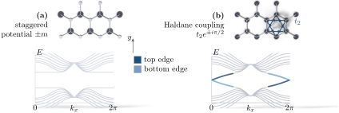
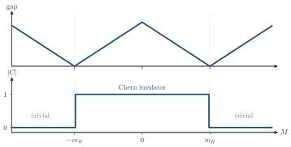

Advanced Quantum Materials 2027 · All lectures · Lecture notes
Session 3. Topological Band Structure Theory
3.10b The Haldane coupling and a real Chern insulator
The staggered potential gave \(C=0\), so it remains to see the second choice of the mass term. Now let us instead open the gap with a purely imaginary second-neighbor hopping, which is called the Haldane coupling. Physically, this term is a pattern of local orbital currents that circulate inside each hexagon, and it is odd under time reversal. This mass term changes sign between \(K\) and \(K'\) relative to \(\lambda\), so the two Dirac points now give Chern numbers of the same sign, which add and do not cancel. The result is \(C = \pm 1\), a real Chern insulator, built only from lattice hoppings and without any external magnetic field. This was the first model with a finite and quantized Hall conductivity and zero net flux. It is the mechanism to open a gap in the Dirac cone of Section 2.11 that we were looking for. Figure 3.5 shows the two cases side by side, each on the lattice and in the spectrum of a ribbon, where only the Haldane case has edge states that cross the gap. A gap can also be opened by combining an ordinary magnetization with spin-orbit coupling, which gives the same sign pattern as the Haldane term and an equivalent quantum anomalous Hall state. Both routes have material realizations. Physics similar to the Haldane model has been realized in twisted graphene bilayers on boron nitride, and the route with magnetism and spin-orbit coupling has been realized and measured in Cr-doped (Bi,Sb)\(_2\)Te\(_3\).

We keep the Haldane coupling fixed and increase a staggered potential until it is larger than the Haldane mass. What happens to the Chern number?
Show the answers
- A. ✗ False
This is false. Take a Haldane mass \(0.5\) and a staggered mass \(1\). The masses at the two valleys are \(1.5\) and \(0.5\), both positive, so \(C=\tfrac12-\tfrac12=0\).
- B. ✗ False
This is false. The two masses add at one valley and subtract at the other, and each Dirac point gives at most \(\pm\tfrac12\).
- C. ✓ True
This is true. The net masses of the two valleys are \(m_s+m_H\) and \(m_s-m_H\). When the staggered one wins both have the same sign, and the two half-integers of (3.8) are opposite and cancel.
We can follow this cancellation on the lattice. In Schematic 3.9 we keep the Haldane coupling fixed and we increase the staggered potential \(M\). The staggered potential \(M\), which Figure 3.5 writes as \(m\), gives the mass \(m\) of (3.7) with the same sign at both valleys. The Haldane coupling instead gives masses of opposite sign at \(K\) and \(K'\), and only this one gives \(C=\pm1\).

Notebook check-in: session3.ipynb, “The quantum anomalous Hall effect” (Core), “Edge states of the quantum anomalous Hall state” (Core) and “Topological phase transitions in the edge” (Core). Two more sections are challenges, “Topological states and topological invariants” (Challenge) and “Topological phase transitions in the bulk” (Challenge).
Build the honeycomb ribbon with the Haldane coupling and without magnetic field, and check that the same chiral edge states of Section 3.6 appear, as the argument above predicts. Then, in the exercise on the Berry curvature, integrate the curvature separately for the Haldane coupling and for a sublattice imbalance. You should find a non-zero net Chern number for the Haldane case and a vanishing one for the sublattice imbalance, which is the difference between cancellation and addition that we worked out around (3.8). Then combine both terms and change their relative strength, and follow where the bulk gap closes and then where the edge states do. This is the numerical version of the phase transition at \(t=1\) of Section 3.9, now in two dimensions. The Berry curvature of Schematic 3.5 and the ribbon spectra of Figure 3.5 come from this same computation.
The Haldane coupling has zero net magnetic flux through the unit cell, and yet it gives \(C\neq 0\). Why?
Show the answers
- A. ✗ False
This is false. Take the loop of the six first-neighbor bonds around one hexagon. The hoppings are real, so the phase is zero. The complex phases are on the second-neighbor bonds and add to zero over the unit cell.
- B. ✓ True
This is true. What matters is that time reversal is broken, and not that the field is nonzero. The imaginary second-neighbor hopping gives currents that circulate inside each hexagon and cancel on average.
- C. ✗ False
This is false. The staggered potential lives on the same bipartite honeycomb lattice and gives \(C=0\), as in Figure 3.5. The lattice alone cannot decide the Chern number.
Try it. The cell fixes the Haldane coupling at 0.05 and increases the sublattice imbalance. The title of each panel gives the Chern number. It is 2 for the first two values of the imbalance and 0 for the last two, because both spin species count. Double the Haldane coupling to 0.1 and run the cell again. The jump of the Chern number needs about twice the imbalance, since the Haldane mass is twice as large.
- In Section 4.19 the Haldane model is connected to the quantum Hall state without closing the gap, so the two are the same phase.
- In Section 4.20 Cr-doped (Bi,Sb)\(_2\)Te\(_3\) and twisted graphene on boron nitride realize this Chern insulator.
- In Section 6.16 a Dzyaloshinskii-Moriya interaction gives the magnons of a honeycomb magnet the same complex second-neighbor hopping.
- In Section 9.8 a vacancy in the Haldane model binds a state inside the gap.